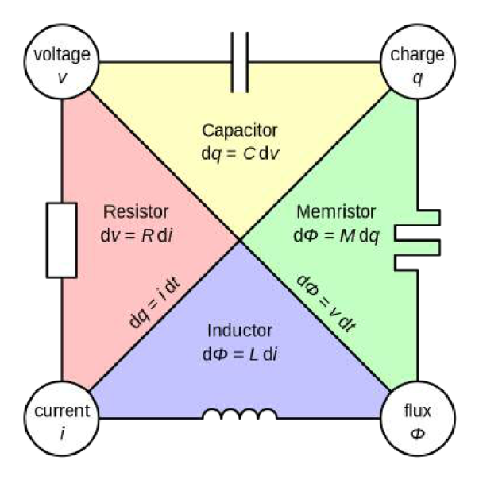
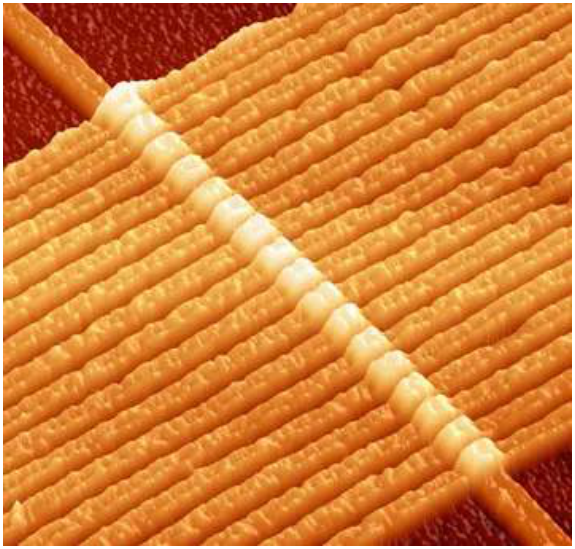
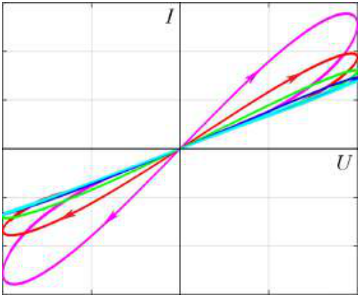

NVRAM(Non-Volatile Random Access Memory, 비휘발성 임의 접근 메모리)은 전력이 없는 상태에서도 정보를 저장할 수 있는 임의 접근 메모리의 한 종류이다. 임의의 메모리 셀에 언제든지 독립적으로 접근하고 지속적인 전력 공급 없이 데이터를 저장할 수 있는 능력은 발명 당시 거대한 기술적 가능성을 열었으며, 우리는 오늘날에도 여전히 이를 사용한다(그림 1).
NVRAM에는 여러 종류가 있다. 그중 가장 널리 쓰이는 것은 반도체 소자에 기반한 것으로, 따라서 다루기가 어렵다. 이 문제에서 우리는 NVRAM의 유망한 구현인 멤리스터(memristor)에 기반한 ReRAM(Resistive Random Access Memory)과, 이미 거의 과거로 사라진 구현인 강유전체(segnetoelectric)에 기반한 강유전체 메모리(FeRAM, Ferroelectric Random Access Memory)를 모두 살펴볼 것이다.
1971년 Leon O. Chua 교수는 멤리스터(memristor)—전압과 전류 사이의 관계가 소자를 통해 흐른 총 전하에 의존하는 전기 소자—의 가능성에 대한 이론적 근거를 발표하였다.

멤리스터 기반 컴퓨팅 시스템은 인간 뇌의 뉴런과 유사한 원리로 작동하며 훨씬 낮은 에너지 소비와 비교적 단순한 구조로 동일한 결과를 잠재적으로 달성할 수 있어, 현재 인공지능 분야 연구자들의 큰 주목을 받고 있다.

오랫동안 멤리스터는 “종이 위에서만” 존재하다가, 2008년 Hewlett-Packard가 최초의 작동하는 멤리스터 시제품을 선보였다. 이 시제품에서는 두 서로 다른 물질의 접촉 영역에서 일어나는 전기화학 반응으로 인해 흐르는 전하에 따라 저항이 변하는 효과가 달성되었다(그림 3).
전기화학 반응은 가역적이므로, 이 시제품 멤리스터의 저항은 전류가 없을 때 평형값으로 향한다. 이러한 멤리스터의 가장 단순한 이론적 기술을 위해 우리는 Williams–Strukov 방정식을 사용할 수 있다:
\[\begin{cases} R(x) = R_{\mathrm{off}}(1 - x) + R_{\mathrm{on}}x\\[1mm] \dfrac{dx}{dt} = \dfrac{1}{\beta}I - \alpha x \end{cases}\]여기서 $x$는 계의 내부 상태에 의해 결정되는 어떤 매개변수이고, $\alpha, \beta > 0$는 알려진 양이며, $I$는 멤리스터를 통과하는 전류, $R_{\mathrm{off}}$와 $R_{\mathrm{on}} = rR_{\mathrm{off}}$ $(r \gg 1)$은 각각 “off” 상태와 “on” 상태에서 멤리스터의 저항이다.
먼저 일정한 전압 $U > 0$ 하에서 멤리스터 상태의 시간 변화를 고려하자. 초기에 멤리스터는 “off” 상태(즉 $x = 0$)이다.
편의를 위해 $\xi \equiv \dfrac{r-1}{\beta R_{\mathrm{off}}}$를 도입한다. 멤리스터의 내부 매개변수 $x$가 평형값과 10% 이내로 차이가 날 때 멤리스터가 켜진(on) 것으로 간주한다. 이 파트의 남은 모든 항목에서 단순화를 위해 큰 전압 $U$의 극한에서 작업하시오.
멤리스터에 진동하는 전압이 가해지면, 그것을 통해 흐르는 전류와 전하의 변동으로 인해 저항도 진동한다. 이 때문에 같은 전압에서도 멤리스터를 통과하는 전류는 전압이 증가하는지 감소하는지에 따라 달라진다. $I - U$ 좌표에서 이러한 거동은 히스테리시스 고리(hysteresis loop)처럼 보인다(그림 4). 이러한 고리의 특성을 측정함으로써 멤리스터의 일부 중요한 매개변수를 계산할 수 있음이 밝혀졌으며, 이 파트에서 그것을 수행할 것이다.

멤리스터에 진동하는 전압 $U\cos\omega t$가 가해지며, $U > 0$이라고 하자.
히스테리시스 고리 폭을 다음과 같이 도입한다:
\[s = \max_{\phi}\frac{\Delta I(\varphi)}{2I_0},\]여기서 $I_0$는 전류 진동의 진폭이다.
히스테리시스 곡선의 폭은 측정하기 쉬우므로, 이를 이용해 멤리스터의 매개변수를 결정할 수 있다. 아래 표는 멤리스터에 가해진 전압의 진동수 $f$에 대한 $s$의 의존성을 전압 $U = 1\,\mathrm{V}$에서 보여준다.
| $f$, Hz | 100 | 250 | 500 |
| $s$, $10^{-3}$ | 47.8 | 54.1 | 36.7 |
또한 off 상태에서 멤리스터의 저항 $R_{\mathrm{off}} = 300\,\Omega$이 측정되었다.
시제품 멤리스터 소자에 전압 $U = 5\,\mathrm{V}$ 하에서 정보가 기록된다.
보다시피, HP의 연구자들은 아직 완벽함과는 꽤 거리가 있다…
대부분의 물질에서 편극(polarization)은 외부 장이 없을 때 항등적으로 0이다. 그러나 강유전체(segnetoelectric)라 불리는 종류의 물질은 외부 장이 가해지지 않아도 편극을 유지한다. 편극의 방향에 정보를 저장하고 이를 쉽게 읽고 다시 쓸 수 있는 능력이 강유전체 메모리(FeRAM) 창안의 기반이 되었다. 이 파트에서 우리는 강유전체의 이러한 성질을 상세히 조사할 것이다.
강유전체에서 부피 에너지 밀도 $W$는 편극 $P$와 외부 전기장 $E$에 다음과 같이 의존한다:
\[W(P) = -aP^2 + bP^4 - PE,\]여기서 $a, b > 0$는 물질에 따른 양이다. 편극의 평형값은 $W(P)$의 국소 극소에 의해 결정된다. 외부 장이 없을 때 강유전체에는 동일한 에너지를 갖는 두 평형 상태가 있으며, 이들 사이의 전이는 불가능하다. 이것이 정보 저장에 이용된다.
처음에 음의 $P$ 상태에 있던 강유전체 물질을 고려하고, 어느 순간 외부 전기장이 켜지면서 증가하기 시작한다고 하자. 그러면 장이 어떤 임계값 $E_{\mathrm{cr}}$에 도달할 때, 더 작은 편극을 갖는 국소 극소가 사라지고 계는 남아 있는 유일한 평형 상태로 도약(jump)하면서, 이 순간 단위 부피당 에너지 $Q = -\Delta W$를 열의 형태로 방출한다. 이후 외부 장을 천천히 끄면, 계는 양의 $P$를 갖는 평형 상태로 이동한다(즉 상태가 바뀐다). 이것이 정보 기록에 이용된다.
최초의 상용 FeRAM 시료는 티탄산 지르콘산 납(lead zirconate titanate)을 사용하였으며, 이에 대해 $a = {1.9\cdot10^5\,\dfrac{\mathrm{J\cdot m}}{\mathrm{C^2}}}$, $b = {1.7\cdot10^3\,\dfrac{\mathrm{J\cdot m^5}}{\mathrm{C^4}}}$이다. 메모리 셀은 $l = 350\,\mathrm{nm}$ 공정으로 제작되었으며, 이를 이용해 셀의 부피를 추정할 수 있다.